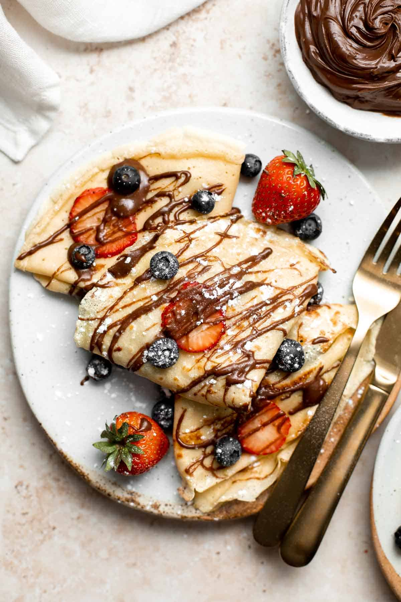

Nutella Crepes

Crepe filled with nutella, topped with fruit, powdered sugar, and a nutella drizzle.
This recipe takes 30 minutes to make 6 crepes. The cook time for each is around 4 minutes. The batter is a simple recipe which is made in a blender which is so much easier than having to mix everything until the perfect consistency. The ingredient list is very simple with a total of 9 ingredients with one being optional. The crepes themselves are thin, light, and buttery with a chocolate and berry combination which is heavenly delicious. You may substitute the berries for any fruit such as bananas to make it meet any crepe fantasy you want to satisfy.
Ingredients For the Delicious Crepes
- 1 cup All Purpose Flour
- 2 Large Eggs
- 1/2 cup Whole Milk
- 1/2 cup Water
- 2 tablespoons Melted Butter
- 1/2 teaspoon salt
- 1 Cup berries (can be switched out for other fruits)
- 1 cup Nutella
- 1/2 tablespoon powdered sugar
You Will Also Need
- Measuring Cups and Spoons
- Mixing Bowl
- Blender
- Non-Stick Skillet
Steps to Create the Scrumptious Crepes
- Combine the ingredients.Start in a large bowl. Start by whisking together flour and eggs. Then add in milk, water, melted butter, and salt. Now stir to combine.
- Blend. Start by pouring batter into your blender and blend for one minute until it is a smooth consistency.
- Cook.Start by lightly greasing your non-stick skillet and heat over a medium heat. Scoop around 1/4 cup of your batter into the skillet and quickly tilt the skillet in a circular motion to spread the batter evenly on the skillet's surface. Cook your crepe for 2 minutes,or until it turns into a golden brown color.
- Flip.Start by gently loosening the crepe with a spatula and flip it over. Then cook on the other side for 1-2 minutes until the crepe is golden brown on that side as well.
- Repeat.Start by sliding the crepe out of the pan and onto a plate. Repeat the steps above with the rest of your batter.
- Assemble and Serve.Start by spreading berries on half of the crepes and drizzle nutella on top of each crepe. Now fold the crepes into quarters and drizzle extra nutella on top. Sprinke icing sugar (powdered sugar) on the top if you want. Finally serve and enjoy your delicious crepes.